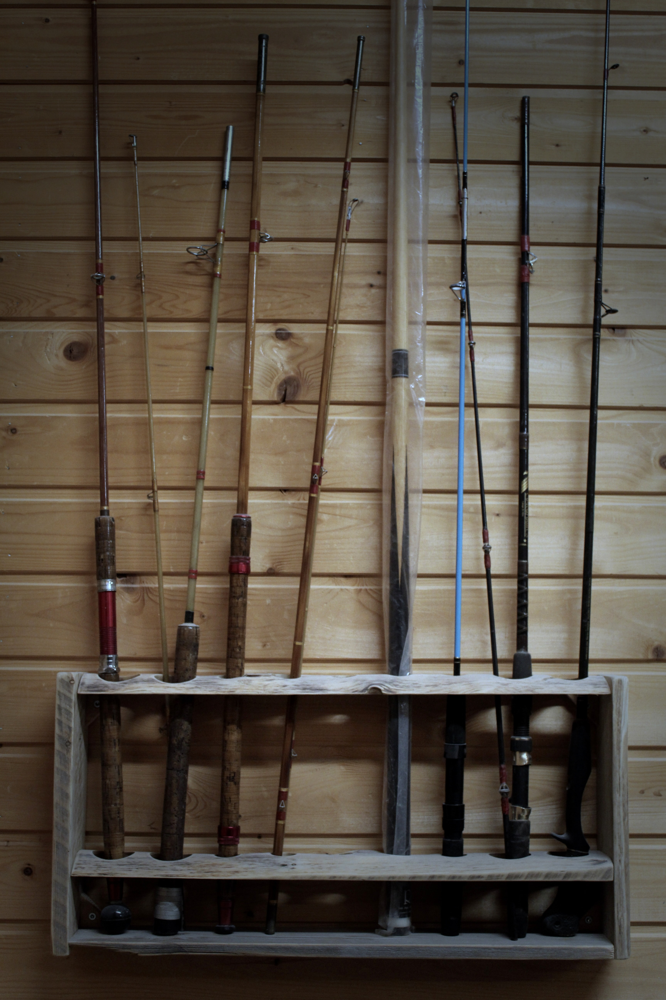
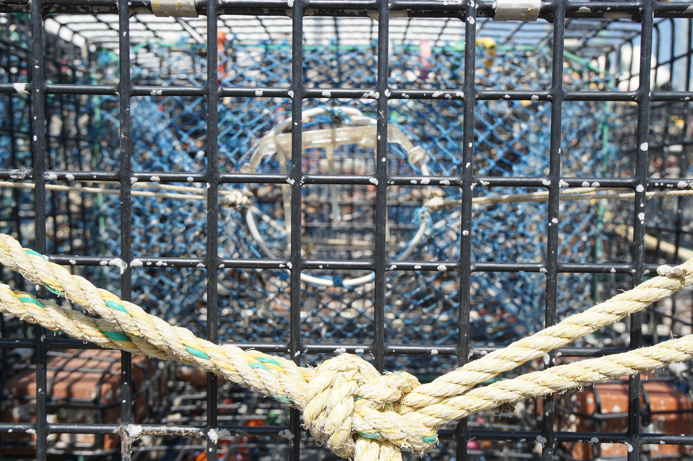
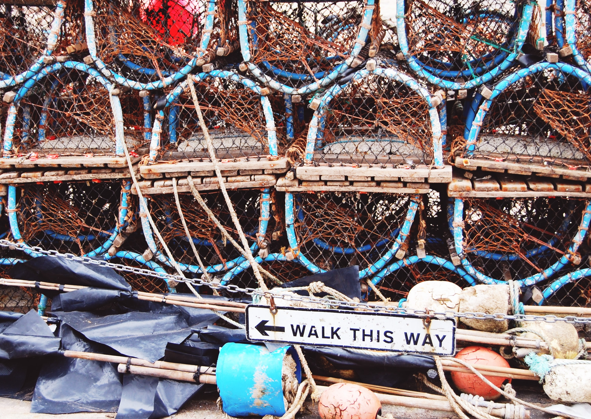
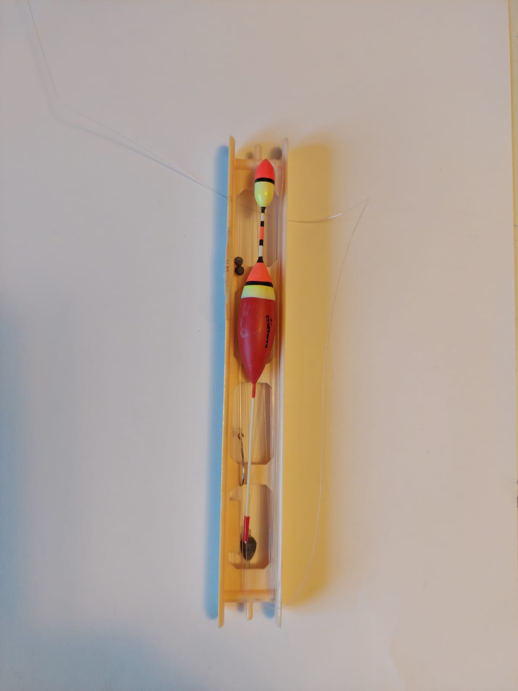
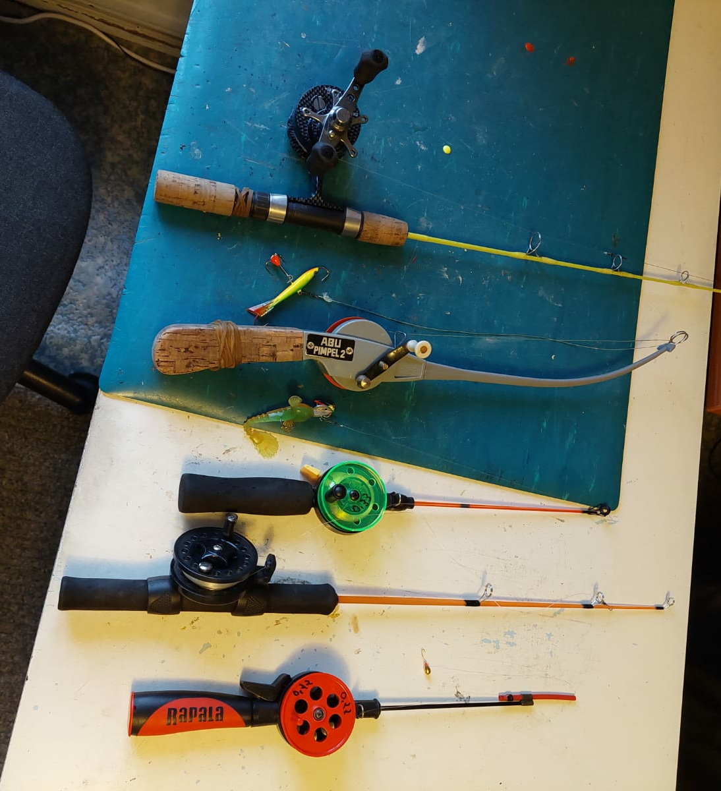
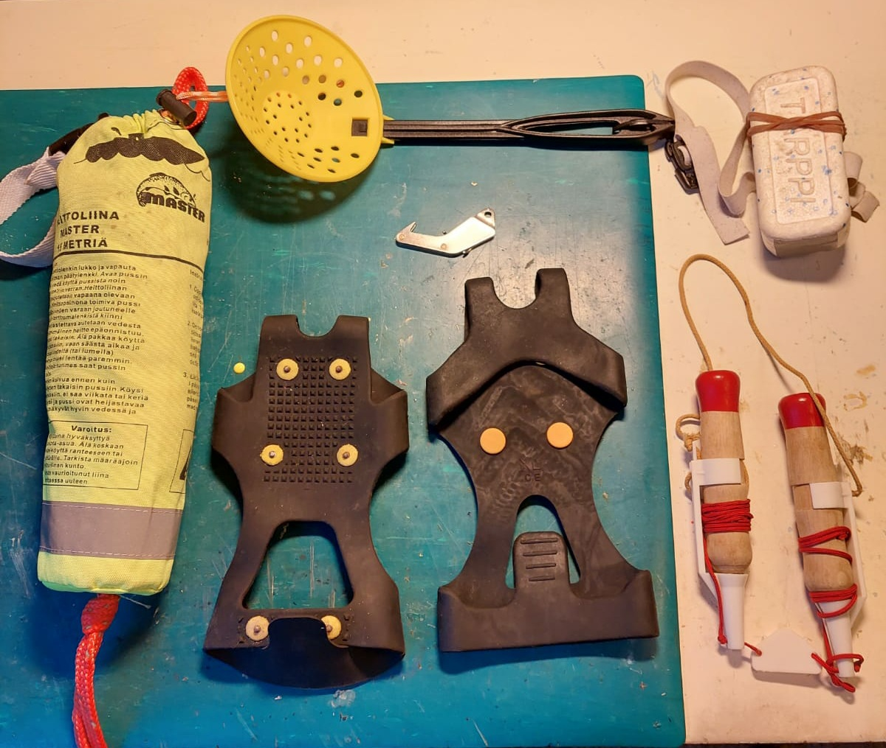
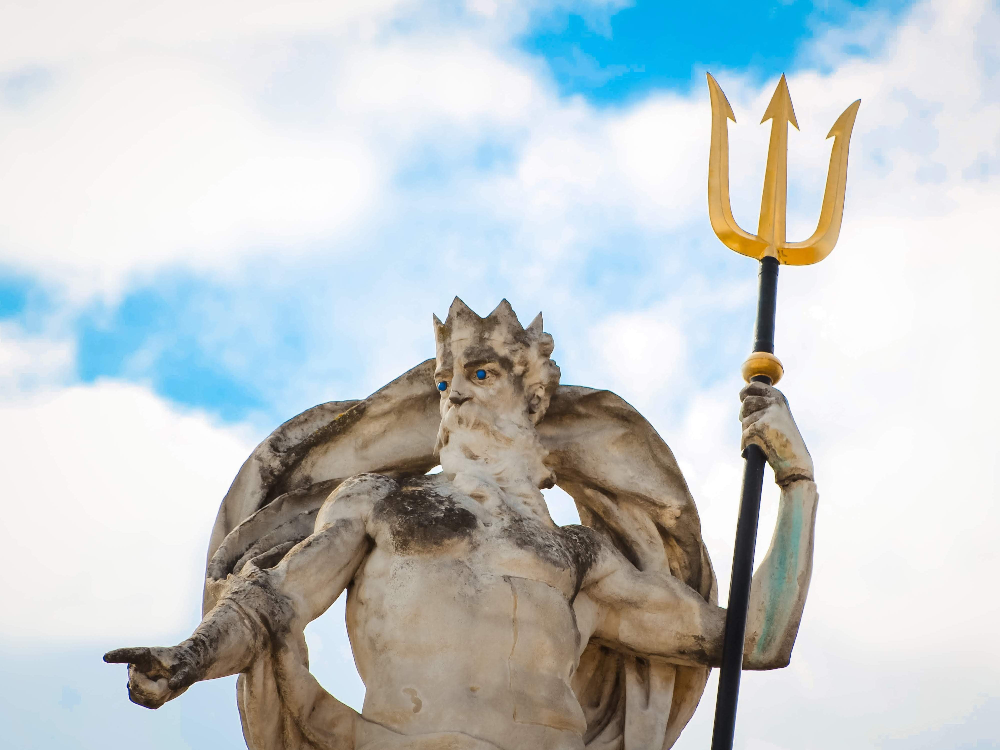
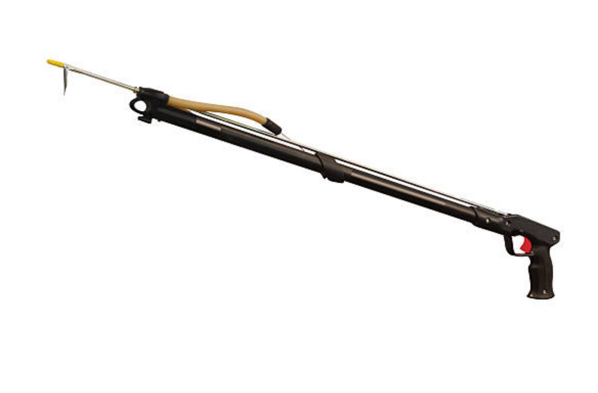

Kalastusvälineet
Päivitetty: 29.11.2021
Yleinen kuvaus kalastusvälineistä
Kalastaa voi monella eri tapaa ja jokaiseen kalastusmuotoon on omat välineet. Sopivan kalastusvälineen valintaan voi vaikuttaa monet asiat, kuten toivotun saaliin määrä, sääolosuhteet ja se että haluaako jännitystä kalastukseen vai ei.
Verkko
Päivitetty: 29.11.2021

Kuvaus kalastusverkosta
Jos kalastaa verkolla niin saa todennäköisemmin isomman saaliin kerralla, mutta verkkoon voi myös juuttua muita vesieläimiä, jotka voivat hukkua verkkoon sotkeutumisen seurauksena.
Katiska
Päivitetty: 29.11.2021
Kuvaus katiskasta
kalastuksessa käytettävä pyydys, jolla voi saada enemmän saalista kerralla. Tämä pyydys on yksi vanhimpia kalastusmenetelmiä. Tarkoitus on, että kalat pääsevät pyydykseen sisälle mutta eivät ulos. Materiaalina käytetään nykyään tiheää metalliverkkoa.
Merta
Päivitetty: 29.11.2021
Kuvaus merrasta
Tämä on yleisin ravustuksessa käytettävä korimainen pyydys, jonka muotoilun ansiosta sillä voi saada saaliiksi sekä kaloja että rapuja. Tämä pyydys on yleensä tehty muovista, pajun oksista, kankaisesta tai metallisesta verkosta, ja pyydyksen tarkoitus on ohjata saalis sisään mutta estä ulospääsy.
Onki
Päivitetty: 29.11.2021
Kuvaus ongesta
Helppokäyttöinen ja yksinkertainen kalastusväline, jolla kalastetaan perinteisesti yksi kala kerrallaan. Onki koostuu onkivavasta, siimasta, kohosta, painosta ja koukusta. Ongessa käytetään perinteisesti syöttinä matoa, joka pujotetaan ongenkoukkuun niin, että kala jää kiinni koukkuun niellessään madon. Vavan avulla syötti lasketaan veteen odottamaan saaliin kiinnijäämistä. Kun kala on jäänyt kiinni koukkuun niin kohon painuu vedenpinnan alle, jolloin saaliin voi nostaa ylös.
Pilkki
Päivitetty: 29.11.2021
 Kuvaus pilkistä
Talvella perinteisesti käytetään pilkkionkea jäähän kairatun reiän kautta kalastamiseen. Pilkkionki koostuu yleensä lyhyestä vavasta, siimasta, painosta ja kelasta. Pilkkiminen vaatii yleensä kärsivällisyyttä, koska saalista voi joutua odottamaan pitkiä aikoja kylmällä kelillä. Koska pilkkiminen monesti tapahtuu jäillä, on tärkeää ottaa riskit huomioon ja pitää kaulassa mukana jäänaskaleita, joiden avulla voi tarttua jäähän ja vetää itsensä pois hyisestä vedestä, jos sinne sattuu tippumaan. Kaira pitää olla mukana, kun lähtee pilkkimään, jotta voi tehdä jäähän reiän kalastusta varten. Kun on kairannut reiän jäähän, on reiässä yleensä sohjoa, joka kannattaa kauhoa pois rei’itetyllä kahvalla. Koska pilkkiminen vaatii kärsivällisyyttä ja monesti tuntien ajan istumista, kannattaa olla mukana pilkkijakkara/reppujakkara, jossa on myös säilytystilaa kalastusvarusteille.
Virveli
Päivitetty: 29.11.2021

Kuvaus virvelistä
Kalastusväline, joka koostuu vavasta, siimasta ja kelasta. Virvelin syöttinä käytetään yleisesti viehettä, jonka voi laskea tai heittää veteen, ja sen jälkeen kelata takaisin itseä kohti. Virvelin voi myös kiinnittää veneeseen ja vetää sitä perässä, mutta kun kala tarttuu kiinni syöttiin, tehdään voimakas vastaisku napakalla vetämisellä ja tästä alkaa väsyttäminen, jossa kala taistelee vastaan ja kalastaja kelaa saalista itseään kohti sitä mukaan, kun saalis antaa periksi. Jos saalis on iso, suositellaan haavin käyttämistä saaliin nostamisessa vedestä.
Atrain
Päivitetty: 29.11.2021
Kuvaus atraimesta
Suomessa vähemmän käytetty kalastukseen tarkoitettu väline, joka muistuttaa keihästä ja sen päässä voi olla jopa kymmenen piikkiä, joiden päässä on väkäset, jotka estävän saaliin karkaamisen.
Harppuuna
Päivitetty: 29.11.2021
Kuvaus harppuunasta
Keihäsmäinen kalastuksessa käytettävä väline, jossa on päässä väkäset, jotka tarttuvat saaliseen kiinni. Tällä välineellä saalistetaan enimmäkseen valaita tai muita isompia saaliita. Yleensä harppuunan lisäksi käytetään laukaisinta, joka ampuu köydessä kiinni olevan harppuunan saaliiseen. Suomessa käytetään harvemmin harppuunaa kalastuksessa.